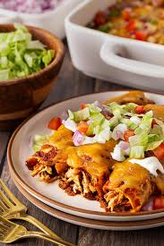

Lasagna

Description
Chicken enchiladas are such a crowd-pleaser, and they're also a pretty easy, throw-together dinner!
Ingredients
- Corn Tortillas: 16 count
- Boneless Skinless Chicken Breast: 2 whole
- Spices: Cumin, chilli powder
- Vegetable Oil: 1/4 cup
- Onion: 1 whole, diced
- Enchilada Sauce: 50 oz. sauce of your choice (green or red)
- Sour Cream: for serving
- Cheese: 3 cups grated cheddar/jack cheese
- Tomatoes: Diced tomatoes for serving
- Cilantro: chopped, for serving
Steps
- Preheat the oven to 350 F.
- One at a time, hold tortillas over the stovetop burner (heated to medium heat) to brown slightly,
about 30 seconds per side. Set warmed tortillas aside.
- Sprinkle both sides of the chicken breasts with the cumin and chili powder.
Heat the oil in a skillet over medium heat and cook the chicken on both sides until done in the middle,
about 4-5 minutes per side or until juices run clear. Set it aside on a plate to cool,
then shred it finely with a fork.
- Throw the onions into the same skillet and stir them around to cook for 4 to 5 minutes,
until deep golden brown and caramelized. Remove them from the pan and set them aside on a plate.
Pour in the enchilada sauce and reduce the heat to low, allowing it to warm through.
- Pour 2 cups of sauce into a 9 x 13 inch casserole dish. To assemble the enchiladas,
dip a tortilla into the sauce then lay on a sheet pan or plate. Sprinkle some cheese
down the middle, followed by some chicken, and finally, some of the caramelized onions.
Roll it up tightly, then place it, seam side down, in the pan. Repeat with the rest of the tortillas.
- Pour the rest of the sauce over the enchiladas, then sprinkle on the rest of the cheese.
Give it a final sprinkling of chili powder, then bake it for 30 minutes, or until hot and bubbly.
- Remove it from the oven and let it sit for 15-20 minutes before serving. Serve 2 enchiladas at a time,
topping with a dollop of sour cream, a sprinkle of diced tomatoes, and a sprinkling of cilantro.
Back to Home